豆拼拼豆
一格一色，
拼出喜欢。
把喜欢的图片，变成一份可制作的图纸。
每格对应真实品牌色号，每种颜色自动统计用量。从选图、备料到逐格拼合，都有清楚的制作依据。
- 对色号 · MARD / HAMA
- 算用量 · 每色与总数
- 好备料 · 按色号准备
{kind=link}
{kind=link}
完整制作链路
选好图片只是起点，
能照着拼出来才是目的。
图纸与备料，是连接画面和成品的关键两步。
- 01 选一张图 照片、插画或角色形象
- 02 转成图纸 网格对应品牌色号
- 03 按色号备料 每色用量清楚
- 04 逐格拼合 对照网格摆放豆子
- 05 熨烫成型 加热熔合，作品定型
在豆拼拼豆里
上传、生成、保存，先拿到这份制作依据。
-
01
上传图片
选一张喜欢的图片，进入像素转换。
上传前 · 界面关键区域节选 -
02
生成图纸
网格、品牌色号和每色用量一次算清。
已生成 · 两处关键区域节选 -
03
保存作品
把图纸留在作品库，之后可以再次编辑。
已保存 · 界面关键区域节选
{kind=link}
{kind=link}
{kind=link}
{kind=link}
需要调整细节时，可以继续进入手动设计。
了解编辑工具转换设置
选对手头的色板，
让图片落到真实色号。
再调整图纸大小、颗粒度与算法，找到适合动手制作的效果。
{kind=link}
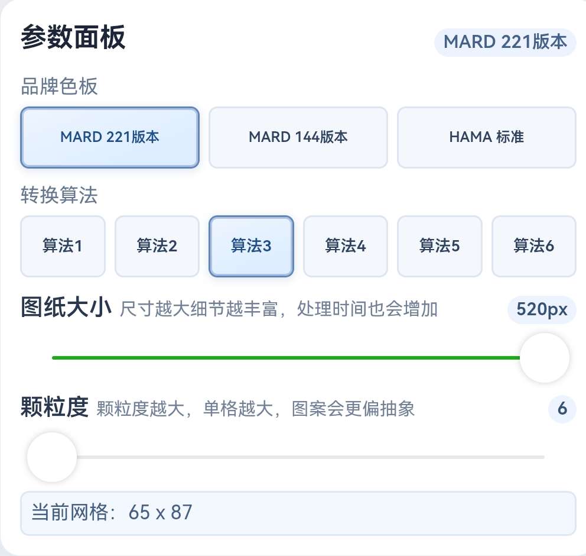
查看大图 ↗- 按手头的品牌选色板
- 提供 MARD 221、MARD 144 和 HAMA 标准三套色板，把画面颜色对应到实际可用的品牌色号。
- 调整尺寸与颗粒度
- 通过图纸大小和颗粒度设置，调整网格密度，寻找适合这张图片的表现方式。
- 切换算法查看效果
- 界面提供六种转换算法。可以尝试不同设置，再决定保留哪一份结果。
注 可按“品牌 → 色板档位”理解：MARD、HAMA 是两个品牌；221、144 是 MARD 旗下色号数量不同的两档，HAMA 标准是 HAMA 的标准色板。
读懂图纸
每格有色号，
每色有用量。
按每格色号摆放，按每色用量准备材料；图案、色号、数量都在同一份图纸里。
逐格对色号
每一格都标出对应颜色，照品牌色号找豆。
{kind=link}
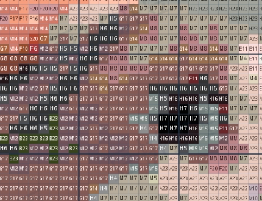
查看大图 ↗按色号算清用量
本例为 65 × 87，共 5,655 颗；每色数量也同步汇总。
{kind=link}
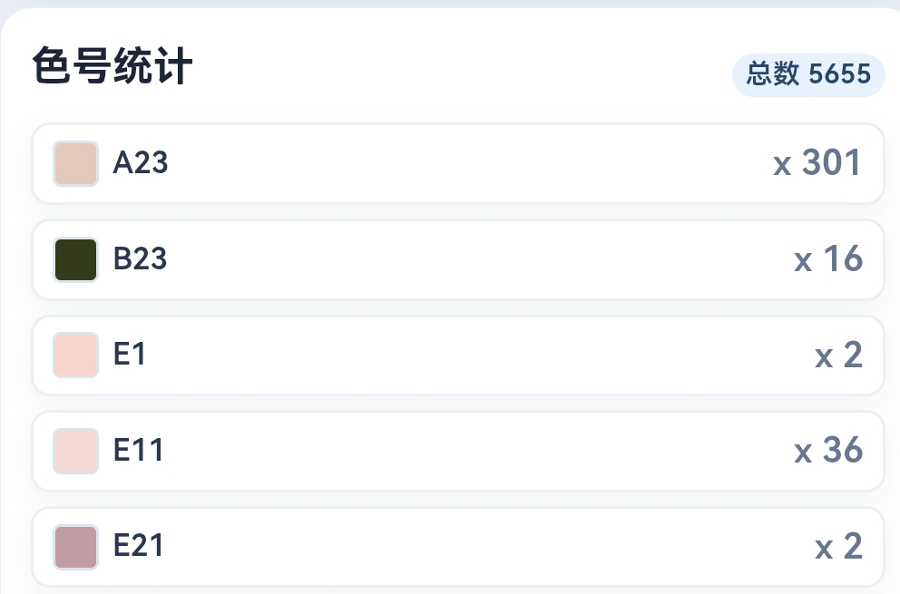
查看大图 ↗把制作依据一起保存下来
导出的高清图保留网格和色号图例，备料、制作时都能随时对照。
{kind=link}
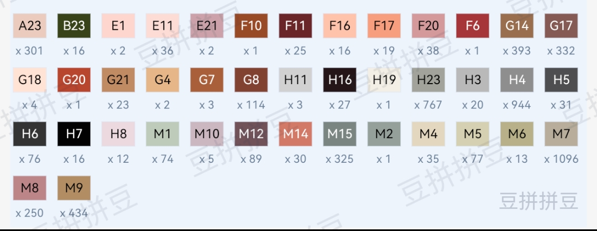
查看图例 ↗自由编辑 · 独立手绘示例
想改哪里，
就从那一格开始。
从空白画布画起，或从已有图纸继续编辑，把细节留给自己的想法。
{kind=link}
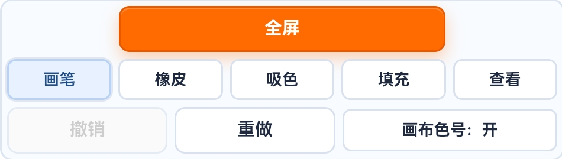
{kind=link}
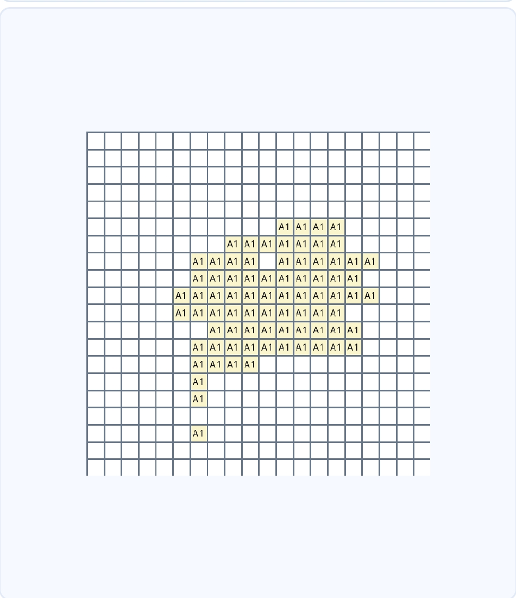
查看画布 ↗- 逐格描画，也能成片填色
- 画笔和橡皮处理小细节，吸色与填充帮助选择、应用颜色。
- 留一点试错的空间
- 用撤销和重做回到合适的步骤，也可以进入全屏查看画布。
从色板中找到下一种颜色
{kind=link}
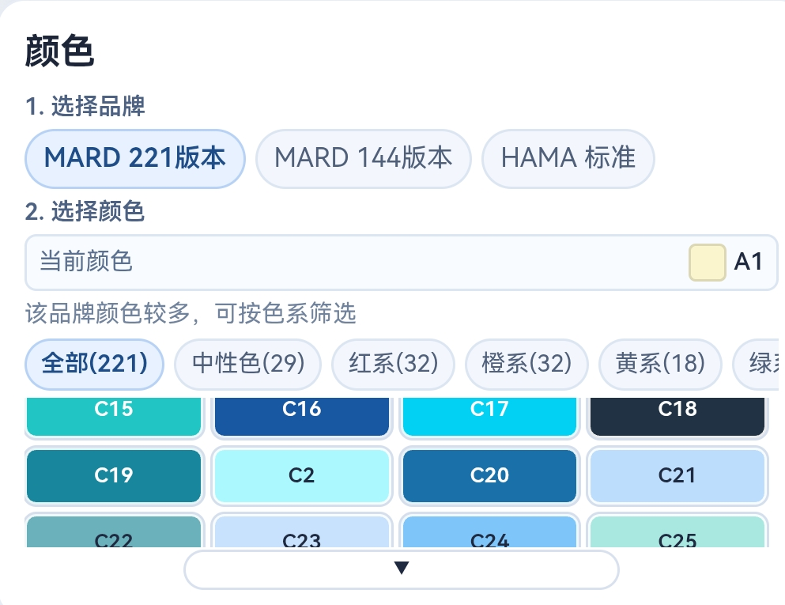
查看色板 ↗我的作品库
作品存下来，
下次接着改。
图片转换和手动创作的图纸，都可以成为作品库里的一份记录。
{kind=link}
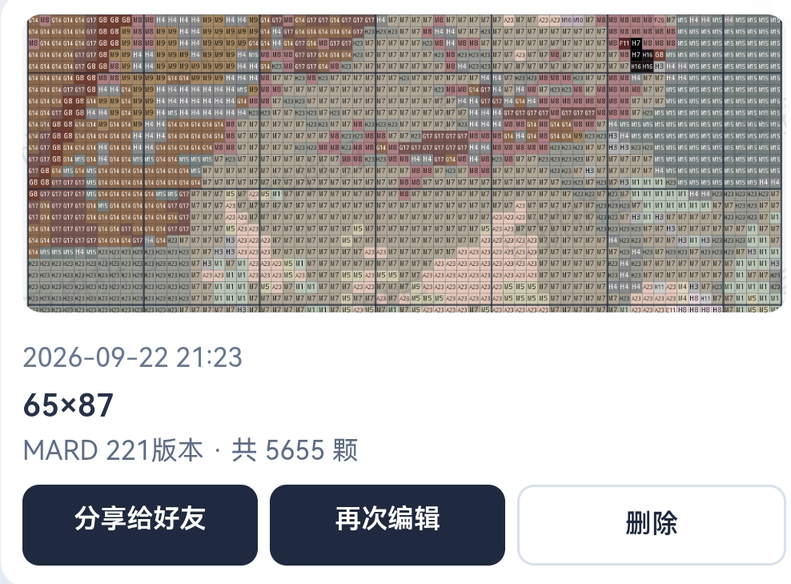
查看大图 ↗{kind=link}
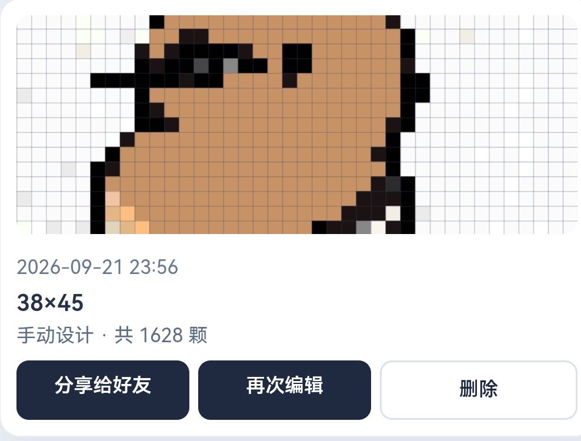
查看大图 ↗更多真实图纸成果 · 独立案例
同一套工具，也能画出不同主题。
以下三张用于补充展示真实图纸成果，不属于上方猫咪创作主线。
先看创作从哪张图片出发。
{kind=link}
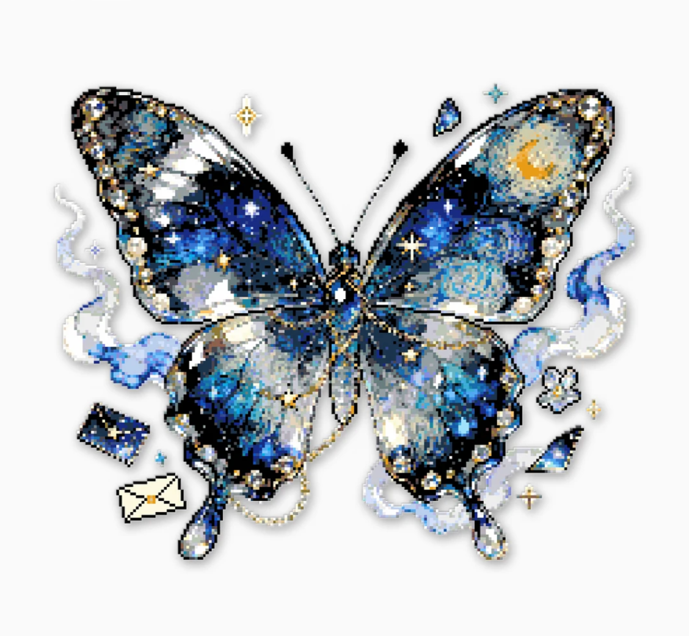
查看原图 ↗{kind=link}
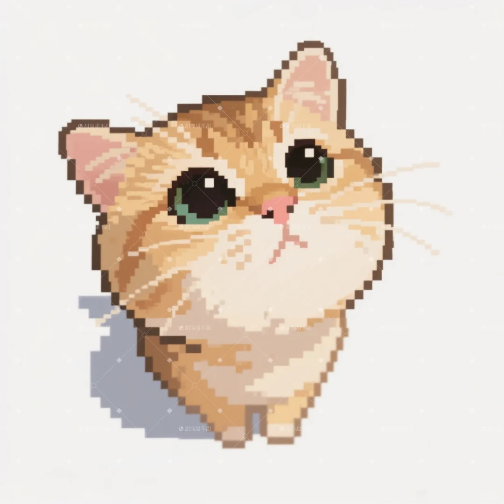
查看原图 ↗{kind=link}
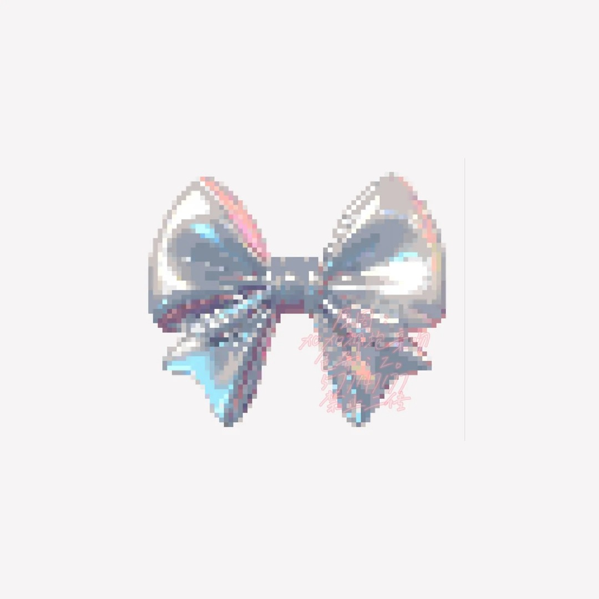
查看原图 ↗网格、色号和用量都保留在图纸中。
{kind=link}
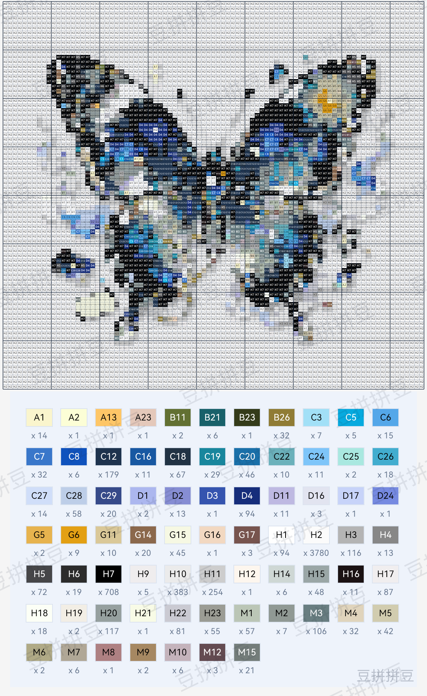
查看图纸 ↗{kind=link}
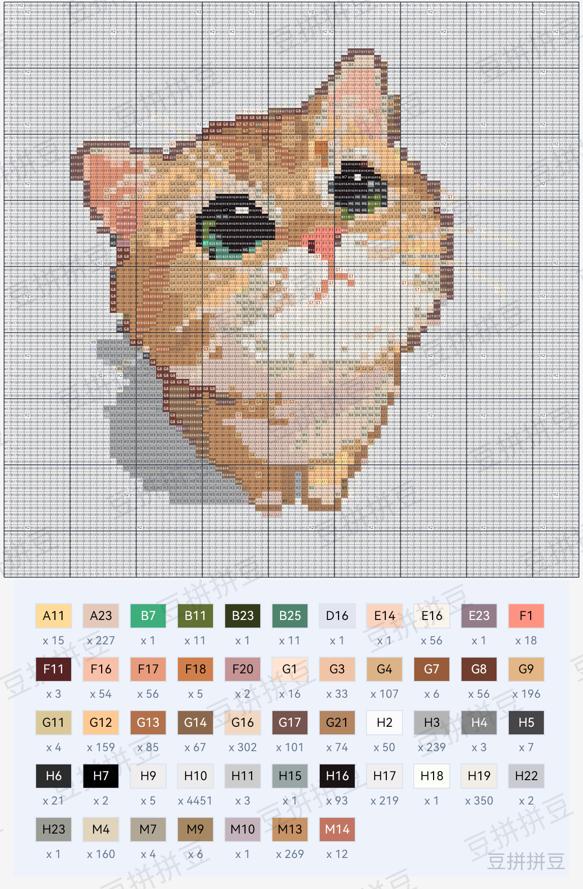
查看图纸 ↗{kind=link}
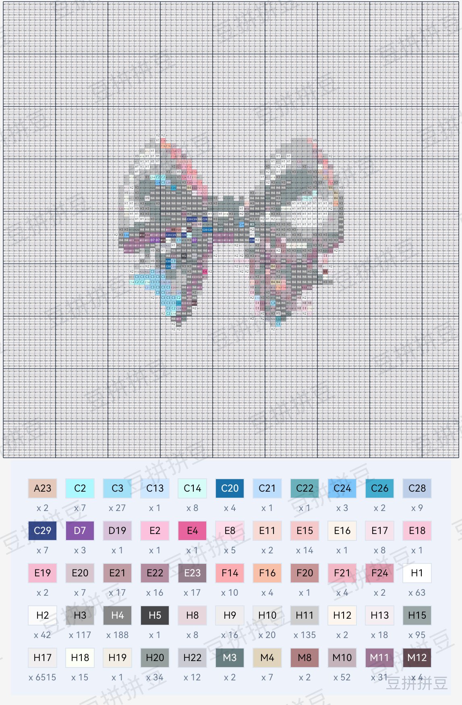
查看图纸 ↗- 导出图片
- 拿到一张图纸图片，用来查看和留存。
- 保存作品
- 留在应用作品库，方便再次打开、编辑和分享。
{kind=link}
{kind=link}
{kind=link}
{kind=link}
{kind=link}
{kind=link}
{kind=link}
{kind=link}
{kind=link}